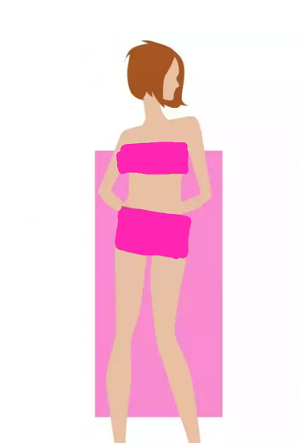

Cetvel: Bir cetvel gibi düz bir þekilde yukarýdan aþaðýya doðru inen vücut þekillerine bu ad verilir. Bu þekil ayrýca çocuksu bir görünüþ olarak da ifade edilebilir. Bilmeniz gereken püf
noktasý, giysilerinizle kývrýmlar yaratmak olmalý. Düz hatlarýnýzý yumuþatan, dökümlü kesimleri tercih edin. Kýsa etekler, kýsa þortlar ya da dar kotlar tercih ederek, ince ve uzun
bacaklarýnýzý cesurca sergileyebilirsiniz. Bu þekle sahip bayanlarýn genelde bel hatlarý yoktur, belleri düz bir þekilde aþaðýya iner. Belinizin biraz aþaðýsýnda bir kemer ve onu
tamamlayan bir ceketle belinizi ortaya çýkarabilirsiniz. Ayrýca, daha kývrýmlý görünmenizi saðlayacak desenlerden ya da cesur çizgilerden yararlanýn. Örneðin, yatay çizgili kazaklar, sizi
þiþman göstermeden, güzel bir dolgunluk kazandýracaktýr. Natalie Portman, Cameron Diaz, Hilary Swank bu vücut þekline sahip ünlüler arasýndadýr.
|